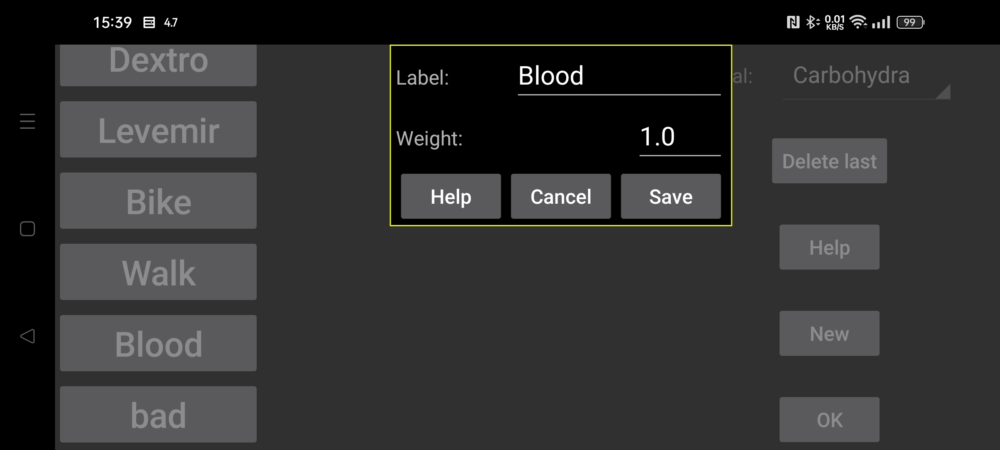

ar be de es fr hi it nl pl pt ru tr uk uz zh en
Nazwa etykiety używanej do wprowadzania liczb. Za pomocą "Nowa wartość" w środkowym menu po lewej stronie można dodać liczbę związaną z określoną datą i godziną. Te liczby można wyświetlić na wykresie glukozy w tej pozycji czasowej lub na liście.
Opcja używana w aplikacji zegarkowej Kerfstok. Liczby wpisane w ramach tej etykiety są zaokrąglane do tej liczby.
0 = pełna dokładność, 0,5 = zaokrąglenie do wielokrotności 0,5 itd.
Przy ustawieniu 0 liczby są wyświetlane na określonej wysokości na wykresie niezależnie od ich wartości. Jeśli waga jest większa niż 0, każda wartość wprowadzona pod tą etykietą jest mnożona przez tę wagę i wyświetlana jako kwadrat w tych samych współrzędnych, co wykres glukozy. Na przykład można ustawić wagę na 1, aby pomiary glukozy z nakłucia palca były wyświetlane tak samo jak pomiary z sensora glukozy.